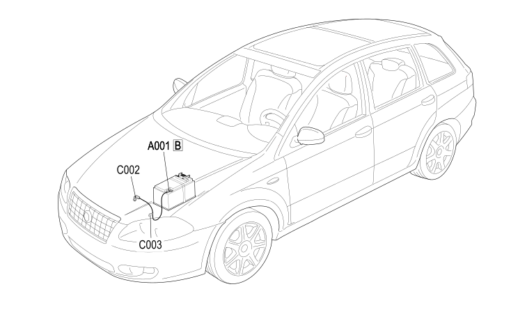

40 BATTERY NEGATIVE
- Path
- Electrical equipment > 2 WIRING > 40 BATTERY NEGATIVE
- Kind
- wiring harness
- Applies to
- all engines; all production periods
- Interactive page
- https://sloeber94.github.io/elrnDB-fCrm/en/#/194001831
Applies to: all engines; all production periods

Topics that link to this page (12)
- A001B BATTERY (BATTERY NEGATIVE)
- A001B BATTERY (BATTERY NEGATIVE)
- A001B BATTERY (BATTERY NEGATIVE)
- A001B BATTERY (BATTERY NEGATIVE)
- C002 BATTERY EARTH ON ENGINE (BATTERY NEGATIVE)
- C002 BATTERY EARTH ON ENGINE (BATTERY NEGATIVE)
- C002 BATTERY EARTH ON ENGINE (BATTERY NEGATIVE)
- C002 BATTERY EARTH ON ENGINE (BATTERY NEGATIVE)
- C003 BATTERY EARTH ON BODYSHELL (BATTERY NEGATIVE)
- C003 BATTERY EARTH ON BODYSHELL (BATTERY NEGATIVE)
- C003 BATTERY EARTH ON BODYSHELL (BATTERY NEGATIVE)
- C003 BATTERY EARTH ON BODYSHELL (BATTERY NEGATIVE)